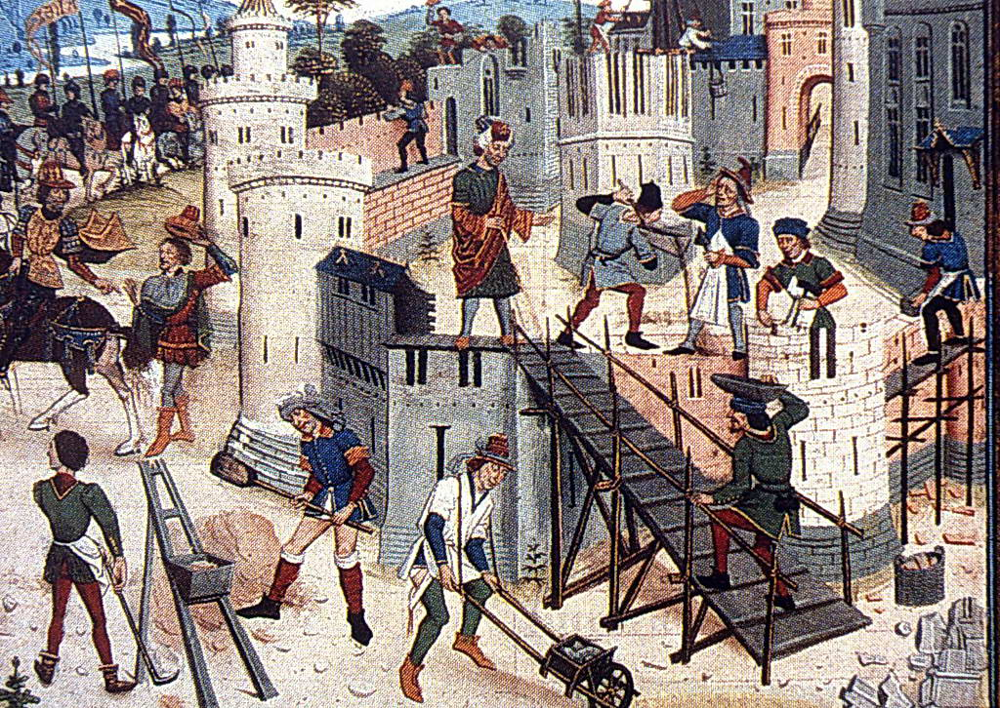
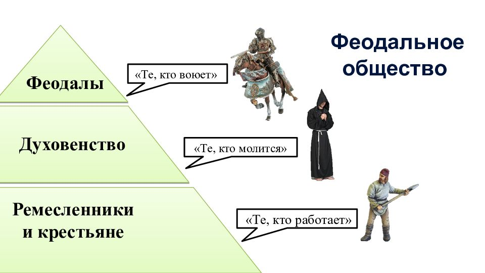
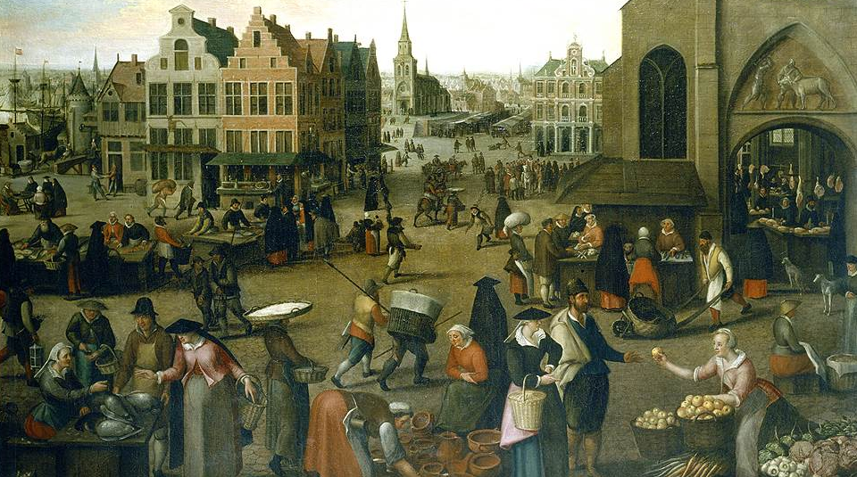

Средние века
Средние века - это период в истории Европы, который длился примерно с 500 года по 1500 год, хотя
существуют
альтернативные точки зрения относительно начала и конца этого периода. Средние века подразделяются на
раннее, высокое и
позднее средневековье. В период позднего средневековья произошли трудности и катастрофы, такие как
голод, чума и войны,
которые значительно уменьшили население Европы. Многие историки спорят о точных датах начала и конца
Средних веков, и
некоторые предлагают продлить этот период до 1800 года.
Эпоха господства феодальных
Эпоха господства феодальных отношений в Европе длилась примерно с V по конец XV века. Феодализм возник
в результате
разложения римской империи и характеризовался высокой степенью политической дуализм светской и духовной
властей,
спецификой европейского города как центра ремесла и торговли, раннего развития горизонтальных
общественных структур,
публичного и частного права. Основными чертами феодализма были господство натурального хозяйства,
экономическое
свертывание латифундии, падение города как ремесленного и торгового центра, ликвидация товарно-денежных
отношений,
зарождение феодально-крепостнических отношений в поместье. В позднем средневековье произошли трудности и
катастрофы,
такие как голод, чума и войны, которые значительно уменьшили население Европы. Многие историки спорят о
точных датах
начала и конца Средних веков, и некоторые предлагают продлить этот период до 1800 года.
Зарождение феодальных отношений
В эпоху V – конец XV века произошло формирование феодальных отношений, характеризующихся вассальными
связями, земельными
владениями и феодальной иерархией. Это привело к установлению феодальной системы, где земля была
основным источником
богатства и власти

Структура феодального общества
Феодальное общество было разделено на три основных класса – феодалы, духовенство и крестьяне. Феодалы
владели землей,
духовенство контролировало религиозные аспекты общества, а крестьяне работали на земле и обеспечивали
производство. Эта
иерархическая структура определяла социальные отношения и власть во времена феодализма

Экономические отношения
Феодальные отношения основывались на обмене землей на защиту и труд крестьян. Феодалы предоставляли
крестьянам участки
земли взамен на труд и часть произведенной продукции. Это создавало зависимость крестьян от феодалов и
формировало
экономическую основу феодализма

Культурные аспекты
В период феодализма происходило формирование национальных языков и литературы, а также развитие
ремесленных цехов и
городских общин. Это способствовало разнообразию культурных проявлений и укреплению общественных связей
внутри
феодального общества
Падение феодализма
К концу XV века начали происходить процессы, приведшие к упадку феодализма. Развитие ремесел, торговли
и появление новых
экономических отношений способствовали постепенному угасанию феодальной системы и переходу капитализма